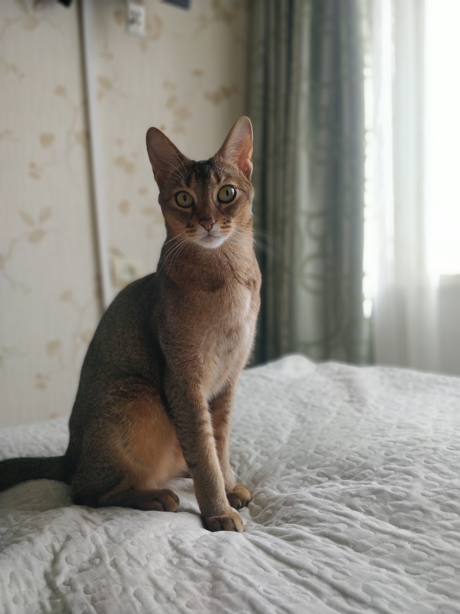

Это вторая домашняя работа по теме HTML and CSS
В этом домашнем задании речь пойдет о моем балбесном коте(конечно кратко)

Зовут его - Тор. Ему уже 4 года, порода - Абиссинская, это довольно активная(если не сказать бешенная) порода, он разве что по потолку не бегает)). Очень интересный оранжево-бежево-черный раскрас, с полосками на хвосте)
Качества этого чудовища
- Он очень активный
- Говорят что их можно дрессировать как собак
- Он ест больше меня)))
Еще немного картинок с этой породой
Абиссинцы